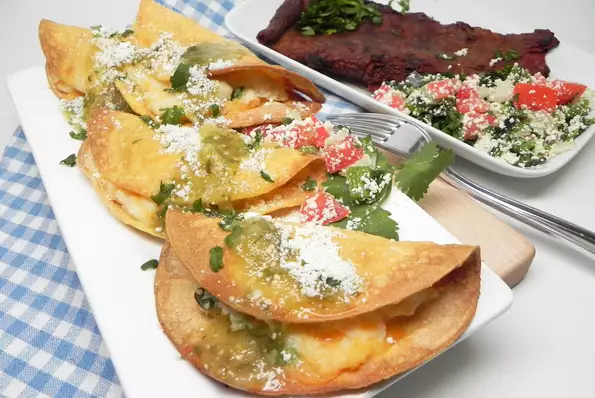

Tacos

How to make delicious Tacos
Just follow the recipe
>
Ingredients
- 2 cups of water
- 1 green onion
- 10 corn tortillas
- 1 teaspoon ground cumin
- 1/4 cup crumbled cotija cheese
Steps
- Heat water to boiling. Add mashed potatoes. Mix thoroughly with a fork.
- Preheat an air fryer to 200 degrees C
- Wrap tortillas ina a papar towel
- Place tacos in the basket of an air fryer
- Drizzle salsa verde over tacos